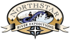

Our armada includes Hyside and Avon rafts ranging in size from 15 feet in length to 19 feet in length. Please let us know what you are most interested in and we will do our best to provide an opportunity for you to try those boats. Guests often rotate to the various different rafts throughout the trip. Forest Service and BLM management plans, as well as safety policies of North Star River Expeditions regulate the number and/or type of boats we can bring on each particular trip.
Our armada includes Hyside and Avon rafts ranging in size from 15 feet in length to 19 feet in length. Please let us know what you are most interested in and we will do our best to provide an opportunity for you to try those boats. Guests often rotate to the various different rafts throughout the trip. Forest Service and BLM management plans, as well as safety policies of North Star River Expeditions regulate the number and/or type of boats we can bring on each particular trip.
- Oar Rafts
- These rafts are set up with an oar frame, where a licensed guide is in control of the raft while passengers hold on for a wild ride or sit and relax in the calmer sections of river, enjoying the passing scenery. Each oar raft carries some personal duffel, as well as fresh drinking water and ice cold beverages for the passengers' enjoyment! Oar rafts hold four to five people comfortably, plus the guide.
- Paddle Rafts
- Every passenger in this raft holds a paddle, as the team makes a collaborative effort under instruction of a licensed guide to navigate rapids or propel the boat in calm water. Paddling is hard work, and therefore provides you with an exhilarating sense of accomplishment by the end of the day! Paddle rafts need a minimum of six people and can hold up to eight paddlers, plus a guide.
- Inflatable Kayaks
- We also bring one and two-person inflatable kayaks along for use on selected portions of the trip. These are relatively stable boats, easy for the beginner of all ages to learn to paddle. We provide instruction on the trip. Generally, two to three kayaks will be brought on each trip, and we will make every effort to offer each person in your group who may be interested a chance to paddle a kayak.
- Supply Pontoons
- These large rafts are custom designed to carry the majority of the trip's camp gear, duffel, food, extra ice and drinks. This leaves the guest rafts less cluttered and more maneuverable. Every morning the supply boatman will leave the rest of the group and float to the next camp. When you arrive at camp at the end of the day, the kitchen gear and tents will be set, and your duffel unloaded.
|
 Rates and Dates Book a trip Rivers: • Snake • Salmon Boats Equipment Food etc. Map |
or e-mail us